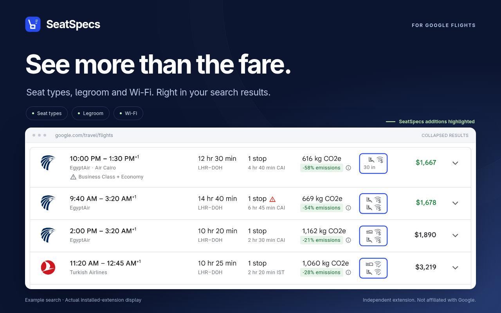
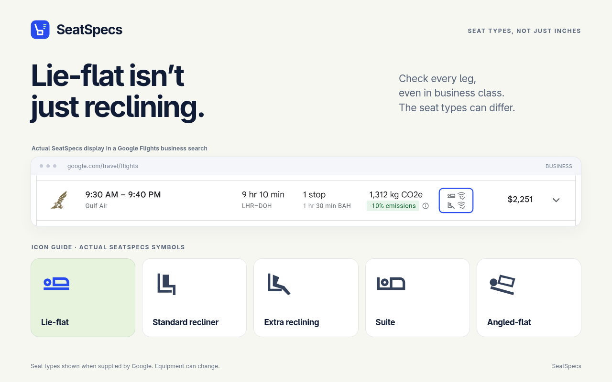
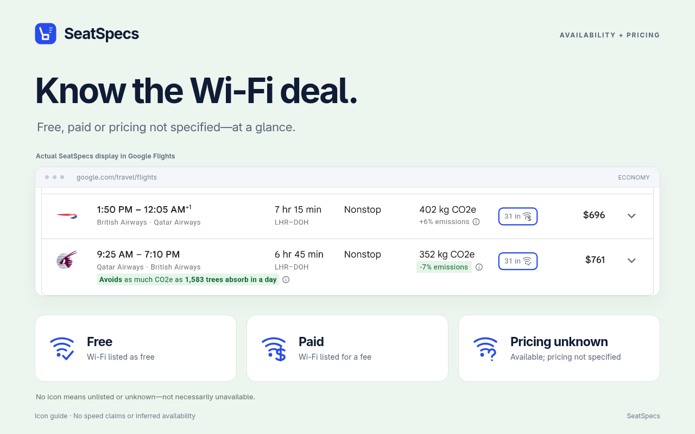

01 / Seat types
Lie-flat isn’t just reclining.
Distinguish lie-flat, reclining, angled-flat and suite seats. Check every leg: a business-class itinerary can include different seat types.
A closer look at Google Flights
Compare seat types, legroom and Wi-Fi right in your Google Flights results—without opening every flight. A little more detail for a more comfortable journey.
Chrome on desktop · Google Flights only · No account required

Comfort is more than a cabin label
01 / Seat types
Distinguish lie-flat, reclining, angled-flat and suite seats. Check every leg: a business-class itinerary can include different seat types.
02 / Legroom
See seat-pitch measurements when Google supplies them, keeping the original units and formatting from your Flights search.
03 / Wi-Fi
Spot free, paid and available Wi-Fi with unspecified pricing. Connecting flights show a separate indicator for each leg.
Information depends on Google’s data and may change. A blank Wi-Fi slot means unlisted or unknown—not necessarily unavailable.
The whole journey matters
SeatSpecs keeps each leg’s seat and Wi-Fi information together, so you can compare the whole itinerary. It uses the information Google provides, without guessing from the airline or aircraft.
How your data is handledSmall column. Useful distinctions.


Example captures, not live fare offers. The large icon guides and blue highlights are editorial presentation, not extra extension controls.
A small addition to your next search
Install SeatSpecs from the Chrome Web Store, then open or reload Google Flights.
With a local checkout of the repository, Node.js and npm:
In the repository directory, run:
npm ci
npm run packageOpen chrome://extensions, enable Developer mode, choose Load unpacked, and select the generated dist/ folder.
Open or reload Google Flights. Seat and Wi-Fi details appear in matching collapsed results when the data is available.
A few useful answers
No. It observes information Google Flights already loads. It does not automatically expand results, request extra flight data, or use a third-party seat-information service.
SeatSpecs processes the information locally in the Flights page, with a bounded in-memory cache. It does not send it to the developer, analytics providers or advertising services, and does not save a persistent search history. Read the full privacy policy.
SeatSpecs does not guess from the airline or aircraft. Unavailable or unmatched seat data can show a dash. Unlisted or unknown Wi-Fi leaves its slot blank; that is not proof that Wi-Fi is unavailable.
Currently, SeatSpecs supports Google Flights only.